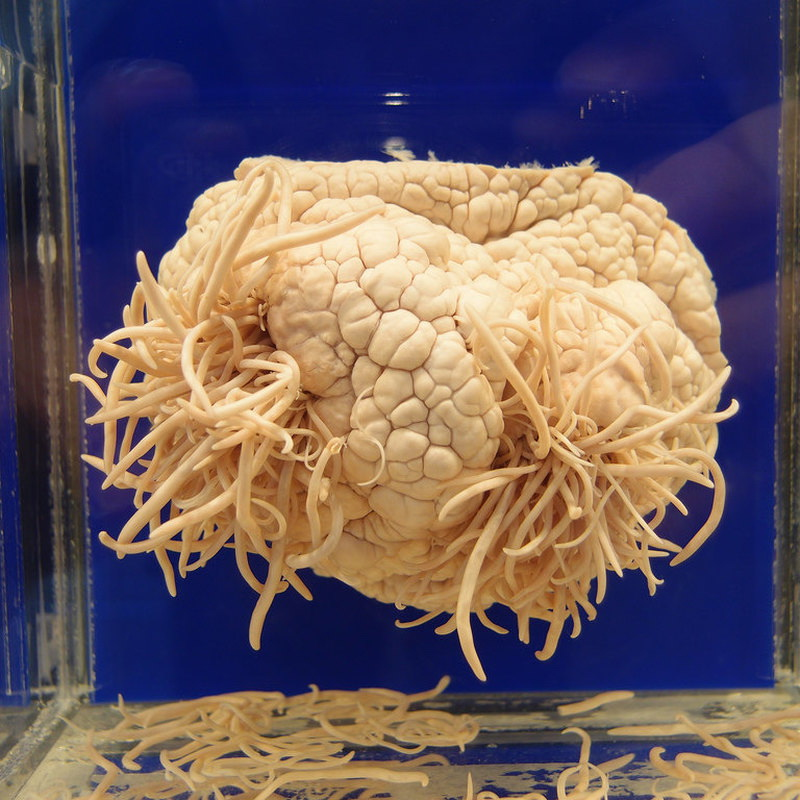

Το 80% όλων των ασθενειών προκαλούνται από παρασιτικές λοιμώξεις. Πώς να είναι δυνατόν να πέσεις θύμα έλμινθων;

Η μόλυνση με παράσιτα εγκυμονεί κινδύνους ανάπτυξης μιας πληθώρας ασθενειών όπως ο διαβήτης, η υπέρταση, διάφορα είδη καρκίνου, υπογονιμότητα και πολλά άλλα. Αυτό συμβαίνει επειδή τα ζωτικά προϊόντα των παρασίτων περιέχουν τοξίνες που προκαλούν ανοσολογική ανεπάρκεια, ανέφεραν εκπρόσωποι της Παγκόσμιας Οργάνωσης Υγείας στην συνάντηση με δημοσιογράφους στις 25 Δεκεμβρίου 2019.
Καθηγητρια, διδάκτωρ της Ιατρικικής, παρασιτολόγος η Ειρήνη Τσαλιγοπούλου μίλησε για τη σχέση των παρασιτικών λοιμώξεων και διαφόρων ασθενειών.
Το θέμα της σημερινής συνομιλίας είναι κάπως ασυνήθιστο, αλλά δεν είναι λιγότερο σημαντικό. Χωρίς περαιτέρω χρονοτριβή, θα δώσω τις επίσημες στατιστικές:
-
• Η Παγκόσμια Οργάνωση Υγείας αναφέρει ότι περίπου 4,5 δισεκατομμύρια άνθρωποι υποφέρουν από διάφορες παρασιτικές ασθένειες – μιλάμε για πάνω από το 60% του παγκόσμιου πληθυσμού
-
• Κάθε τρίτος Ευρωπαίος μολύνεται από παράσιτα
-
• Κάθε χρόνο 15-17 εκατομμύρια άνθρωποι πεθαίνουν από παρασιτικές λοιμώξεις
-
• Η ελμινθίαση είναι η τρίτη πιο κοινή ασθένεια στον κόσμο
Με άλλα λόγια, το πιο πιθανό είναι ότι τα παράσιτα ζουν στο σώμα σας και ακόμα κι αν δεν ζουν, η πιθανότητα μόλυνσης είναι πολύ υψηλή
 Εντερική αναισθησία
Εντερική αναισθησία Ασκαρίδες
Ασκαρίδες
Ένας ζωντανός οργανισμός δεν είναι σε θέση να επιβιώσει χωρίς πυρίτιο, ένα γνωστό αυτό. Ενώ τα παράσιτα που διαδίδονται στο σώμα, πρώτα αρχίζουν να τρώνε το πυρίτιο. Χωρίς το πυρίτιο, το ασβέστιο - το δομικό υλικό των οστών- παύει να απορροφάται. Έτσι αναπτύσσεται η οστεοχονδρωσία, η πολυαρθρίτιδα .
 Τριχομονάδα
Τριχομονάδα
Αλλά η πιο ενδιαφέρουσα ανακάλυψη στην παρασιτολογία έγινε το 1989 και ονομάστηκε Η ιδιότητα της τριχομονάδας να εκφυλίσετε σε ένα κύτταρο όγκου. Αποδεικνύεται ότι ο καρκίνος είναι μια ασθένεια που προκαλείται από παράσιτα και ο κύριος υποκινητής είναι η τριχομονάδα.
Έτσι, οι αιτιολογικοί παράγοντες όλων των ασθενειών είναι πρωτόζωα, μύκητες και έλμινθες.
Πιστεύετε ότι το υπερβολικό βάρος και οι έλμινθες είναι δυο έννοιες ασύμβατες; Δεν είναι έτσι. Για τους ανθρώπους που έχουν μολυνθεί, για παράδειγμα, από πλατυέλμινθες σκώληκες, το λίπος γίνεται η μόνη προστασία από τοξικές επιδράσεις.
Ο εγκέφαλος ενός δελφινιού μολυσμένου από παράσιτα. Νομίζετε ότι το ίδιο δεν συμβαίνει στον άνθρωπο;Σήμερα, στον οργανισμό σχεδόν κάθε κάτοικος μιας πόλης ζουν ή σκουλήκια ή μύκητες. Εφόσον τα έχουν σχεδόν όλοι, άρα είναι ο κανόνας, θα πείτε εσείς ’Όχι, δεν είναι κανόνας!
Εμείς οι παρασιτολόγοι εδώ και καιρό κρούουμε τον κώδωνα του κινδύνου. Το κύριο πρόβλημα είναι η έλλειψη ενός φαρμάκου που θα μπορούσε να εξοντώσει όλους τους πιθανούς τύπους παράσιτων ενός ανθρώπου χωρίς να βλάψει τον ίδιο τον άνθρωπο
Μόλις πριν από λίγες μέρες τελείωσαν οι τελευταίες κλινικές δοκιμές του νέου φαρμάκου – και μπορούμε ήδη να πούμε με βεβαιότητα ότι πρόκειται για σημαντική ανακάλυψη στην αντιμετώπιση παρασιτικών λοιμώξεων. Εκτός από μια πλήρη εξυγίανση, το έδειξε άριστες «παρενέργειες» όπως ο καθαρισμός του σώματος από τις τοξίνες, ευεργετική επίδραση στα όργανα της γαστρεντερικής οδού, διέγερση της εκροής της χολής, απαλλαγή από έλκη, γαστρίτιδα και πολλές χρόνιες ασθένειες, βελτίωση της κατάστασης του δέρματος, των μαλλιών, των νυχιών, αποκατάσταση της κένωσης, απαλλαγή από τις αλλεργίες.

Τώρα μπορείτε να αγοράσετε το στον επίσημο ιστότοπο του κατασκευαστή σε μειωμένη τιμή. Τρέξτε να προλάβετε, πολύ σύντομα το θα κυκλοφορήσει στα φαρμακεία και η τιμή του θα είναι εντελώς διαφορετική.
Σχόλια:
Σχόλιο